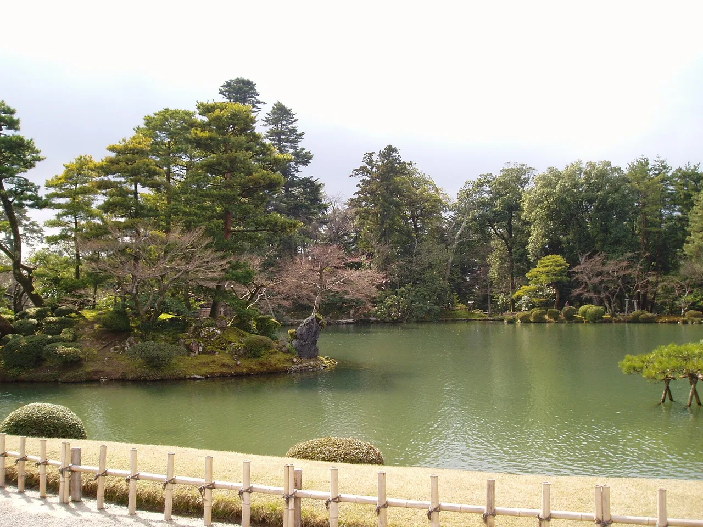

Ishikawa คู่มือท่องเที่ยวสำหรับผู้เรียนภาษาญี่ปุ่น
สรุป
Ishikawa ยืดห่างไปตามทะเลญี่ปุ่น ตั้งอยู่ที่เมืองปราสาท Kanazawa ที่มี Kenrokuen ซึ่งเป็นหนึ่ง 'สามสวนใหญ่ของญี่ปุ่น' และมีเขต geisha และ samurai ที่ยังคงสภาพดีงาม ทางเหนือของเมือง Noto Peninsula ที่ขรุขระ มีวิวชายฝั่งที่น่าตื่นตาตื่นใจ งานฝีมือลักษณ์เฉพาะของการทำให้วาร์นิช ที่อยู่มายาวนาน และตลาดอาหารทะเล
📍 ชม: Kenrokuen Garden · 🥢 ลอง: Kaisendon / Omicho Market seafood (snow crab, nodoguro, amaebi) · แหล่งที่มา
สวนของ Kanazawa และทองคำแผ่น บวกกับคาบสมุทร Noto ที่เป็นป่าเถื่อน

🍜 อาหาร ▰▰▰▰▰ 🏯 วัฒนธรรม ▰▰▰▱▱ 🏙 เมือง ▰▰▰▱▱ 🚄 การเดินทาง ▰▰▱▱▱ 🌿 ธรรมชาติ ▰▰▰▰▱
🥢 ลอง: Kaisendon / Omicho Market seafood (snow crab, nodoguro, amaebi) · 📍 ชม: Kenrokuen Garden
🗣 ここの景色は本当に素晴らしいですね。 Koko no keshiki wa hontou ni subarashii desu ne.
Ishikawa มีศูนย์กลางอยู่ที่ Kanazawa ซึ่งเป็นเมืองปราสาทที่ปรับปรุงและหลีกเลี่ยงการ轰炸ในสงครามได้ Kenroku-en ได้รับการยกย่องว่าเป็นหนึ่งในสามสวนแนวนอนที่ยิ่งใหญ่ของญี่ปุ่น
ต้องไปดู
★ Kenrokuen Garden★ Higashi Chaya District★ Nagamachi Samurai District💎 Gold leaf (kinpaku) workshop in Higashi Chaya💎 Noto Peninsula farmhouse stays and Shiroyone Senmaida rice terraces
- สวน Kenroku-en
- เขตเกอิชะ Higashi Chaya
- ปราสาท Kanazawa และพิพิธภัณฑ์ศตวรรษที่ 21
- ชายฝั่งคาบสมุทร Noto
PR วางแผนที่พัก
ลิงก์บางตัวเป็นลิงก์พันธมิตร เราอาจได้รับค่าตอบแทนโดยคุณไม่เสียค่าใช้จ่ายเพิ่ม เราแนะนำเฉพาะบริการที่เราใช้เอง
ต้องกิน
★ Kaisendon / Omicho Market seafood (snow crab, nodoguro, amaebi)★ Jibuni (duck and vegetable stew)💎 Noto beef (Noto-gyu)
อาหารทะเลสดใหม่ ไอศครีมโปะโลยะทองคำแผ่น และอาหาร Kaga
การเดินทางและช่วงเวลาที่ดีที่สุด
การเดินทาง: Kanazawa อยู่ห่างจาก Tokyo ประมาณ 2 ชั่วโมง 30 นาที โดย Hokuriku Shinkansen
ช่วงเวลาที่ดีที่สุด: ทุกฤดู Kenroku-en มีความมหัศจรรย์เมื่อมีเชือก yukitsuri ในฤดูหนาว
เรียนภาษาญี่ปุ่น
きれいですね。
Kirei desu ne. — "ทองคำแผ่น — Kanazawa ผลิตทองคำแผ่นเกือบทั้งหมดของญี่ปุ่น"
คำท้องถิ่น
金箔
kinpaku — ทองคำแผ่น — Kanazawa ผลิตทองคำแผ่นเกือบทั้งหมดของญี่ปุ่น
💡 รู้ไว้ดี
ลองไอศครีมนุ่มโปะโลยะเคลือบทองคำแผ่นในเขต Higashi Chaya
PR วางแผนที่พัก
ลิงก์บางตัวเป็นลิงก์พันธมิตร เราอาจได้รับค่าตอบแทนโดยคุณไม่เสียค่าใช้จ่ายเพิ่ม เราแนะนำเฉพาะบริการที่เราใช้เอง
แหล่งที่มา: Japan National Tourism Organization (JNTO).
ข้อมูลตรวจสอบกับสำนักงานท่องเที่ยวอย่างเป็นทางการ ความคิดเห็นเป็นของเรา